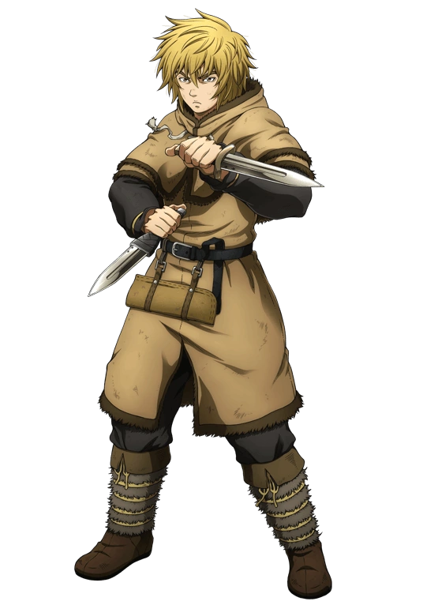
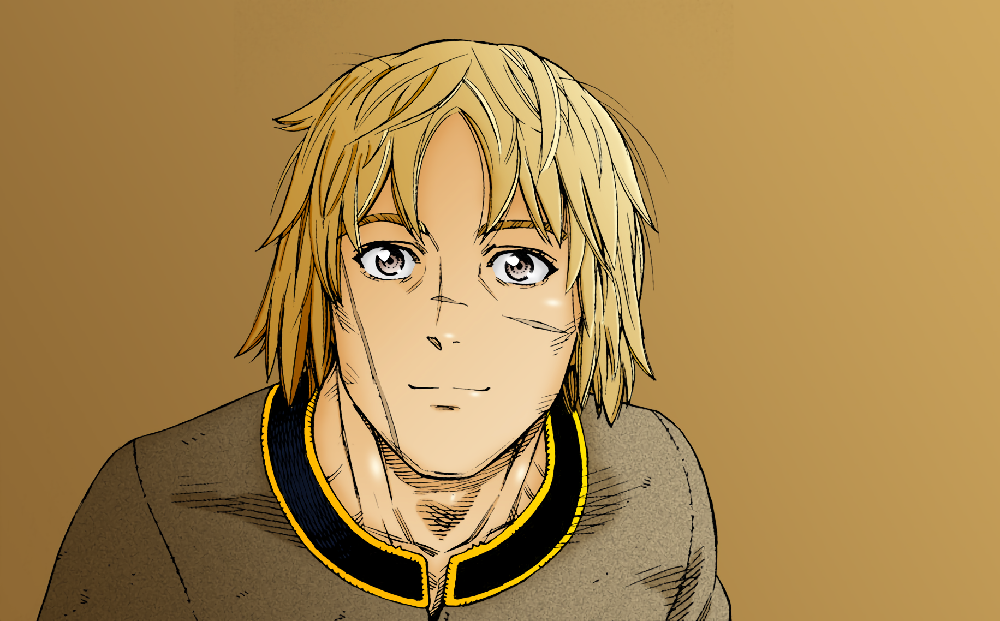
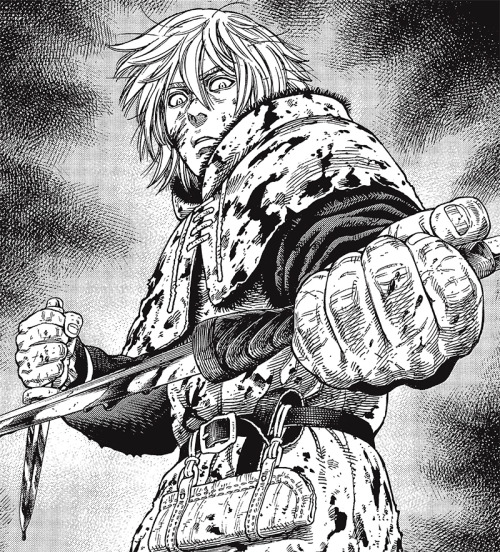

Thorfinn
About Thorfinn
Thorfinn - Thorsson, also nicknamed Karlsefni is a former warrior of Askeladd's band as well as a former slave on Ketil's farm, who is currently a trader and adventurer attempting to settle in Vinland. He is the main protagonist of Vinland Saga.
He was born in Iceland as the son of Helga and Thors, the most famous Jomsviking warrior until his defection. He is also the brother to Ylva, and is related to the leadership of the Jomsvikings through his mother, who is daughter of the third Cheif, Sigvaldi.
He spent an entire decade attempting to take revenge on Askeladd, the man who killed his father, even following him into battle to stay close to him, and grew cold and merciless, killing countless people. After he attacked Canute in a moment of shock and rage for killing Askeladd, the death of whom was Thorfinn's goal for most of his life, Thorfinn was enslaved as a punishment. Four years later he gained his freedom and changed his life.
Appearance
Thorfinn's appearance is pretty consistent throughout the story. He has bushy hair, old clothes, two knives, and a rebellious, angry face. He is also relatively short.
Thorfinn's entire body is littered with scars, most of which were caused by blades. His face remains unmarred until he gains several obvious scars on his face in adulthood, mostly because he refuses to fight with weapons and tries his best to defend himself and neutralize his opponents without causing any lasting harm.
Personality
When the series begins, Thorfinn is shown as an innocent and friendly boy who is searching for adventure. He shared a very good relationship with his family and enjoyed stories told by Leif about his adventures. He has a good relationship with his father and looked up to him immensely, shown when he decides to follow Thors by sneaking on his boat to follow him. This would become the foundation of Thorfinn's drive to avenge his father.
However, by the time he joins Askeladd's band, he is a cold-blooded individual, hellbent on his goal to avenge his father. He becomes aloof toward others, unmoved by and uninterested in what they do or thinks of him, choosing instead to keep to himself. This is seen when Thorfinn ignores the invitations from his fellow Vikings to join in on the fun and his refusing to eat dinner with the rest of them.
He also showed a great lack of empathy, as he did not seem to care when Askeladd's gang murdered civilians and raped women, he just walked away with disgust. Although he sometimes told his possible victims to run when he was not in the mood to kill them, but he didn't really care anyway.
However, Askeladd's death caused him to lose his purpose and become an empty shell after being sold as a slave. During that time, Thorfinn became totally depressed, melancholy, stoic and unwilling to live, living a deplorable life being mistreated by his merchants, with none of the exuberance of his childhood, the pride and belligerence of his adolescence, or even the will to stand up for himself. Fortunately, he began to regain his will and courage with the help of Einar, Snake and Sverkel, who helped him to realize that he is still capable of a meaningful life.
Thorfinn slowly begins to recover and then takes on a more kind and pacifist attitude. He seems to have become more like Thors and seeks to become a merchant to become a better person and forget his dark past as a murderer. His time as a slave also appears to have affected his behaviour. For a while, he refrained from fighting and always tried to resolve the situations in the conversation, but even then this attitude backfired several times, and so he saw that sometimes it was necessary to use force to resolve conflicts.
Abilities
 Dual Wield:Thorfinn's fighting style emphasizes speed combined with the dual-wielding of two knives, one of which was formerly owned by Thors. By targeting his opponents' weak points and taking advantage of his speed, he could typically finish off an opponent swiftly while avoiding their attacks.
Knife Throwing:Thorfinn is also able to effectively use throwing knives, although they are not his primary weapon.
Enhanced Agility:Thorfinn's agility is amongst the fastest in the series, he is capable of evading a platoon of soldiers within seconds on a battlefield, as well as scale a wall of a fortress, including jumping over a moat. In combat, he can use his agility to strike from an angle where he may finish his opponent and to find his balance quickly after taking a hit or dodging.
Enhanced Speed and Reflexes:Thorfinn's speed is regarded as his primary asset in combat. During the invasion of London, he earned Thorkell's praise despite losing to him in combat. His reflexes have enabled him to dodge and react to surprises attacks such as Snake's drawing attack.
Enhanced Speed and Reflexes:Thanks to years of manual labor as a slave on a farm, Thorfinn achieved an explosive increase in strength when he reached adulthood. With this new skill acquired, he was able to throw a man away with just one punch and break the bones of a Jomsviking even though he was wearing armor and Thorfinn was a little weaker. Other feats include breaking a sword with his knee.